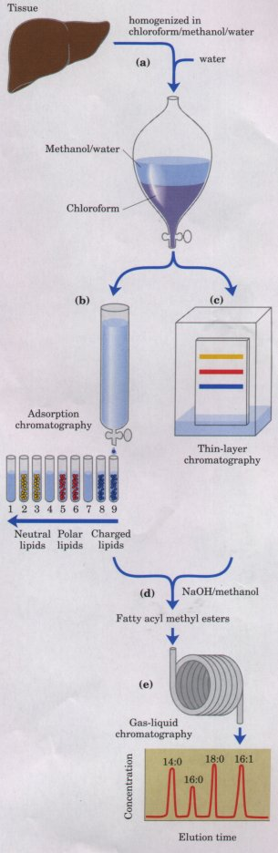

In exploring the role of lipids in a biological process, it is often useful to know which lipids are present, and in what proportions. Because lipids are insoluble in water, their extraction from tissues and subsequent fractionation require the use of organic solvents and some techniques not commonly used in the purification of water-soluble molecules such as proteins and carbohydrates. In general, complex mixtures of lipids are separated by differences in their polarity or solubility in nonpolar solvents. Lipids that contain ester- or amide-linked fatty acids can be hydrolyzed (saponified) by treatment with acid or alkali, to yield their component parts for analysis.
Neutral lipids (triacylglycerols, waxes, pigments, etc. ) are readily extracted from tissues with ethyl ether, chloroform, or benzene, solvents in which lipid clustering driven by hydrophobic interactions does not occur. Membrane lipids are more effectively extracted by more polar organic solvents, such as ethanol or methanol, which reduce the hydrophobic interactions among lipid molecules but also weaken the hydrogen bonds and electrostatic interactions that bind membrane lipids to membrane proteins. A commonly used extractant is a mixture of chloroform, methanol, and water, initially in proportions that are miscible, producing a single phase (1:2:0.8, v/v/v). After homogenizing tissue in this solvent to extract all lipids, more water is added to the resulting extract, and it separates into two phases, methanol/water (top phase) and chloroform (bottom phase). The lipids remain in the chloroform, and more polar molecules (proteins, sugars) partition into the polar phase of methanol/water (Fig. 9-21)
 |
Figure 9-21 Some common procedures used in the extraction, separation, and identification of cellular lipids. (a) Tissue is homogenized in a chloroform/ methanol/water mixture, which on addition of water and removal of unextractable sediment by centrifugation yields two phases. Different types of extracted lipids in the chloroform phase may be separated by (b) adsorption chromatography on a column of silica gel, through which solvents of increasing polarity are passed, or (c) thin-layer chromatography (TLC), in which lipids are carried by a rising solvent front, less polar lipids traveling farther than more polar or charged lipids. TLC with appropriate solvents also can be used to separate individual lipid species from a single class; for example, the charged lipids phosphatidylserine, phosphatidylglycerol, and phosphatidylinositol are easily separated by TLC. For the determination of fatty acid composition, a lipid fraction containing esterlinked fatty acids is (d) transesterified in a warm aqueous solution of NaOH and methanol, producing a mixture of fatty acyl methyl esters, which are then (e) separated on the basis of chain length and degree of saturation by gas-liquid chromatography. Precise determination of molecular mass, by mass spectroscopy (not shown), allows unambiguous identification of individual lipids. The lipid is ionized and volatilized by heat and the resulting molecular ion is passed through an electromagnetic field, which deflects ions to a degree dependent on their size. By comparison with standard ions of known molecular mass, the mass of the unknown molecular ion is determined with such great accuracy that the structure of the lipid can be deduced.. |
The complex mixture of tissue lipids can be fractionated further by chromatographic procedures based on the different polarities of each class of lipid. In adsorption chromatography (Fig. 9-21), an insoluble, polar material such as silica gel (a form of silicic acid, Si(OH)4), is packed into a long, thin glass column, and the lipid mixture (in chloroform solution) is applied to the top of the column. The polar lipids bind tightly to the polar silicic acid, but the neutral lipids pass directly through the column and emerge in the first chloroform wash. The polar lipids are then eluted, in order of increasing polarity, by washing the column with solvents of progressively higher polarity. Uncharged but polar lipids (cerebrosides, for example) are eluted with acetone, and very polar or charged lipids (such as glycerophospholipids) are eluted with methanol.
Thin-layer chromatography on silicic acid (Fig. 9-21) employs the same principle. A thin layer of silica gel (silicic acid) is spread onto a glass plate, to which it adheres. A small sample of lipids dissolved in chloroform is applied near one edge of the plate, which is dipped in a shallow container of an organic solvent within a closed chamber saturated with the solvent vapor. As the solvent rises on the plate by capillary action, it carries lipids with it. The less polar lipids move farthest, as they have less tendency to bind to the polar silicic acid. The lipids can be detected after their separation by spraying the plate with a dye (rhodamine), which fluoresces when associated with lipids, or by exposing the plate to iodine fumes. Iodine reacts with the double bonds in fatty acids, giving the lipids that contain them a yellow or brown color. For subsequent analysis, regions containing separated lipids can be scraped from the plate and the lipids recovered by extraction with an organic solvent.
Gas-liquid chromatography separates volatile components of a mixture according to their relative tendencies to dissolve in the inert material packed in the chromatography column, and to volatilize and move through the column, carried by a current of an inert gas such as helium. Some lipids are naturally volatile, but most must first be derivatized to increase their volatility (that is, lower their boiling point). For the analysis of the fatty acids present in a sample of phospholipids, the lipids are first heated in a methanol/HCl or methanol/NaOH mixture, which converts fatty acids esterified to glycerol into their methyl esters (transesterification). These fatty acyl methyl esters are then loaded onto the gas-liquid chromatography column, and the column is heated to volatilize the compounds. Those fatty acyl esters most soluble in the column material partition into (dissolve in) that material; those less soluble are carried by the stream of helium and emerge first from the column (Fig. 9-21). The order of elution depends on the nature of the solid adsorbant in the column, and on the boiling point of the components of the lipid mixture. Using these techniques, mixtures of fatty acids with various chain lengths and various degrees of unsaturation can be completely resolved.
Certain classes of lipids are susceptible to degradation under specific conditions. For example, all ester-linked fatty acids in triacylglycerols, phospholipids, and sterol esters are released by mild acid or alkaline treatment, and somewhat harsher hydrolysis conditions release amide-bound fatty acids from sphingolipids. Enzymes that specifically hydrolyze certain lipids are also useful in the determination of lipid structure. Phospholipases A, C, and D (see Fig. 9-12) each split specific bonds in phospholipids and yield products with characteristic solubilities and chromatographic behaviors. Phospholipase C, for example, releases a water-soluble phosphoryl alcohol (phosphocholine from phosphatidylcholine) and a chloroform-soluble diacylglycerol, each of which can be characterized separately to determine the structure of the intact phospholipid. The combination of specific hydrolysis with characterization of the products by thin-layer chromatography or gasliquid chromatography often allows determination of the structure of a lipid. To establish unambiguously the length of a hydrocarbon chain, or the position of double bonds, mass spectral analysis of lipids or their volatile derivatives is invaluable.